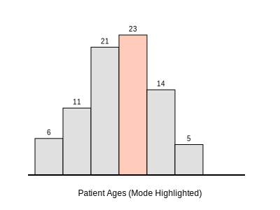
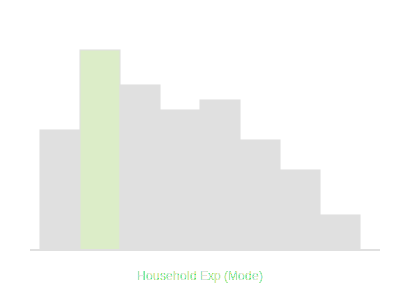
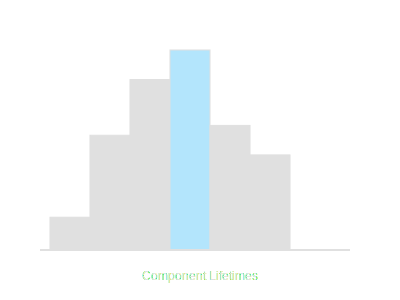

1. The following table shows the ages of the patients admitted in a hospital during a
year... Find the mode and the mean of the data given above.

For Mode: Maximum frequency is 23 (Class 35-45).
Modal Class = 35-45.
l = 35, h = 10, f₁ = 23, f₀ = 21, f₂ = 14.
Mode = l + [(f₁ - f₀)/(2f₁ - f₀ - f₂)] × h
= 35 + [(23 - 21)/(46 - 21 - 14)] × 10
= 35 + [2/11] × 10 = 35 + 1.81 = 36.8.
For Mean (Step Deviation): Mean = 35.37 years.
Mode = 36.8 years, Mean = 35.37 years.
2. The following data gives the information on the observed lifetimes (in hours) of 225
electrical components... Determine the modal lifetimes of the components.

Max frequency is 61 (Class 60-80).
l = 60, h = 20, f₁ = 61, f₀ = 52, f₂ = 38.
Mode = 60 + [(61 - 52)/(122 - 52 - 38)] × 20
= 60 + [9 / 32] × 20
= 60 + 5.625 = 65.625.
Modal Lifetime = 65.625 hours.
3. The following data gives the distribution of total monthly household expenditure of 200
families... Find the modal monthly expenditure of the families. Also, find the mean monthly expenditure.

For Mode: Max freq = 40 (Class 1500-2000).
Mode = 1500 + [(40-24)/(80-24-33)] × 500
= 1500 + [16/23] × 500 = 1500 + 347.83 = 1847.83.
For Mean: Using Step Deviation, Mean = 2662.5.
Mode = ₹ 1847.83, Mean = ₹ 2662.50.
4. The following distribution gives the state-wise teacher-student ratio... Find the mode
and mean of this data.

Mode: Max freq = 10 (Class 30-35).
Mode = 30 + [(10-9)/(20-9-3)] × 5
= 30 + [1/8] × 5 = 30 + 0.625 = 30.6.
Mean = 29.2.
Mode = 30.6, Mean = 29.2.
5. The given distribution shows the number of runs scored by some top batsmen of the world
in one-day international cricket matches. Find the mode of the data.

Max freq = 18 (Class 4000-5000).
Mode = 4000 + [(18 - 4)/(36 - 4 - 9)] × 1000
= 4000 + [14/23] × 1000
= 4000 + 608.69 = 4608.7.
Mode = 4608.7 runs.
6. A student noted the number of cars passing through a spot on a road for 100 periods
each of 3 minutes and summarised it in the table given below. Find the mode of the data.

Max freq = 20 (Class 40-50).
Mode = 40 + [(20-12)/(40-12-11)] × 10
= 40 + [8/17] × 10 = 40 + 4.7 = 44.7.
Mode = 44.7 cars.